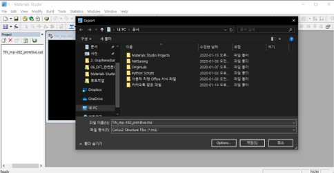
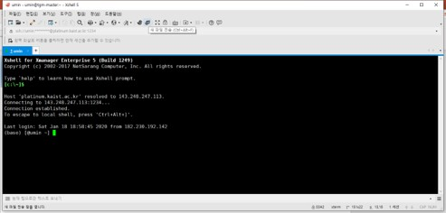

Tutorial 0: Basic SIESTA Calculation
Contents
Part 1: 이론적 배경 & siesta 개요
- 이론적배경
- Siesta 개요
Part 2: 분자
- Exercise : CH4 분자 구조 최적화
- Exercise : CH4 분자 basis test
- Exercise : CH3 전자밀도
Part 1: 이론적 배경 & siesta 개요
참고문헌: SIESTA homepage (http://www.icmab.es/siesta/) Documentation Tutorials
이론적배경
a. 튜토리얼에서는 Kohn-Sham 방정식을 푸는 시뮬레이션을 진행한다. Kohn-sham 방정식은 아래와 같다.

- Pseudopotential 은 계산의 편의를 위해 원자의 core부분에 해당하는 전자들을 하나의 포텐셜로 치환하는 것을 의미한다. 위의 그림과 같이 pseudopotential은 원자와의 일정 거리(rc) 이상에서 실제 전자의 wave function과 같도록 만들어 준다.

- 계산 상에서 간소화로 인해 야기되는 무시된 single-particle problem은 LDA나 GGA와 같은 exchange-correlation 함수로 고려한다.
- Kohn-sham equation에서 basis로 사용되는 Wavefunction은 SZ(single zeta), DZ(double zeta), TZ(triple zeta), DZP(double zeta polarized), DZDP(double zeta double polarized)…와 같은 basis로서 표현된다.
- 앞서 언급된, Basis의 결정으로 Basis 의 숫자가 결정되며 이는 계산의 정확도와 관련이 있다.
b. Kohn-Sham DFT계산에서 사용되는 SCF(self-consistent-field) 계산의 알고리즘은 아래의 그림과 같다.
알고리즘에서 H(Hamiltonian)은 LCAO(linear combination of atomic orbitals)로 구성되며 SCF loop를 통해 안정된 에너지를 가지는 H를 구할 수 있다. 이를 통해 Bandstructure, (P)DOS 등 다양한 물질특성을 분석할 수 있다.
Siesta 개요
- 위와 같은 DFT 계산을 위해서는 아래와 같은 input 파일과 executable 파일이 필요하다. Input 파일은 .fdf,(RUN.fdf, STRUCT.fdf, KPT.fdf, BASIS.fdf) 와 psf 가 필요하다.
- fdf 파일은 파일을 실행시키는데 필요한 정보들을 가지고 있는 파일이며 psf파일은 pseudopotential 정보를 가지고 있는 파일을 뜻한다.
- 이러한 input 파일을 통해 band, PDOS LDOS, eigenvalue 등의 결과를 output으로 알 수 있다.
- Siesta 는 아래 그림과 같은 과정으로 진행된다.

Part 2: 분자
Exercise 1: CH4 분자 구조 최적화
DFT 계산을 위해서는 먼저 계산하려는 구조의 최적화가 필요하다.
a. 구조 최적화는 다음과 같은 방식으로 진행된다.

- Step 1. Geometrical optimization 을 추측하여 구조를 계산한다.
- Step 2. 위의 계산결과를 바탕으로 Geometrical optimization없이 구조 계산을 실행한다.
b. STRUCT 파일 구성

- Material studio 에서 다운받은 파일을 실행시킨 다음 export에서 msi 로 저장한다.

- Xshell에서 아래그림과 같이 새 파일 전송을 누른다.

- 이제 다운받은 파일을 Xftp에서 드래그를 통해 옮긴 후 다음 커맨드를 입력한다.
첫번째 방법
$vasptools-linux –poscar (material)_mp-492_primitive.msi
$vi POSCAR
$vasptools-linux –xyz POSCAR
$xyz2structfdf_full.py POSCAR.xyz
두번째 방법
$msi2fdf.sh (material)_mp-492_primitive.msi
$vi STRUCT.fdf
이로서 구조최적화를 하기 전 기본적인 STRUCT.fdf 파일을 만들 수 있다.
$vi STRUCT.fdf
NumberOfAtoms 5 # Number of atoms
NumberOfSpecies 2 # Number of species
%block ChemicalSpeciesLabel
1 6 C
2 1 H
%endblock ChemicalSpeciesLabel
LatticeConstant 40.000000000 Ang
%block LatticeVectors
1.000000000 0.000000000 0.000000000
0.000000000 1.000000000 0.000000000
0.000000000 0.000000000 1.000000000
%endblock LatticeVectors
AtomicCoordinatesFormat ScaledCartesian
%block AtomicCoordinatesAndAtomicSpecies
-0.000196800 -0.000196800 -0.000178525 1 1
0.025718150 -0.006302475 -0.007980825 2 2
-0.006302475 0.025718150 -0.007980825 2 3
-0.002297125 -0.002297125 0.027402550 2 4
-0.017873200 -0.017873200 -0.012210550 2 5
%endblock AtomicCoordinatesAndAtomicSpecies
c.pseudopotentil 파일은 default pseudopotential (ChemicalSpeciesLabel.psf) for each atomic species. (https://departments.icmab.es/leem/siesta/Databases/Pseudopotentials/periodictable-lda-abinit.html) 에서 다운 받거나 직접 만들 수 있다. 계산에 필요한 pseudopotential 파일과 BASIS.fdf, KPT.fdf, slm_siesta_run파일은 폴더에 정리해 두었다.
d. 계산을 위한 폴더 만들기
$ mkdir ch4(폴더이름)
$ cd ch4
slm_siesta_run을 ch4 폴더에 복사
$ mkdir input(폴더이름)
$ cd input
C.psf, H.psf, RUN.fdf, STRUCT.fdf, KPT.fdf, BASIS.fdf 파일을 input 폴더에 복사
$ cd ..
$ sbatch slm_siesta_run
Geometrical optimization을 위해서는 계산된 결과(OUT)를 통해 새로운 input 파일을 생성하여 새로운 계산을 실행해야 한다. 새로운 STRUCT.fdf 파일을 만들기 위해 아래와 같은 작업이 필요하다.
$ cd input
$ siesta2xyz.py STRUCT.fdf
$ vi STRUCT.xyz
셀정보를 복사(아래그림의 빨간색 영역)

$ cd ..
$ cd OUT
$ vi Test.xyz(cell정보가 포함되어 있는 파일)
셀정보를 붙여넣기
$ xyz2fdf_cell.py Test.xyz
$ cd ../../
$ cp Text.fdf ../input/
새로운 STRUCT.fdf 파일 생성
$ cp Text.fdf STRUCT.fdf
$ cd ..
$ cd input
$ vi RUN.fdf
MD.NumberCGstep을 0으로 바꾼다.
$ cd ..
$ sbatch slm_siesta_run
STRUCT.fdf 파일 시각화를 통해 구조최적화 전후의 bonding length 와 bonding angle이 달라짐을 확인 할 수 있다.
$ cd (OUT directory)
$ xyz2fdf_cell.py STRUCT.fdf (STRUCT.fdf 파일을 xyz 파일로 변환)
$ xyz2xcrysden.py STRUCT.xyz
Display-Unit of Repetition-Translational asymmetric unit 선택

Distance 선택 후 원자 두개를 선택한 후 Done을 선택하면 Distance를 알 수 있다.

Angle 선택 후 원자 세개를 선택한 후 Done을 선택하면 Angle을 알 수 있다.

구조 최적화 전 bonding length : 1.30719 Ang, bonding angle : 108.7856 deg 구조 최적화 된 bonding length : 1.10977 Ang, bonding angle : 109.4914 deg
Exercise 2: CH4 분자 basis test
Geometrical Optimization 을 위와 같이 진행 한 후에는 Basis test를 통해 사용한 Basis가 적절한지 테스트를 한다. Basis 테스트는 Geometrical Optimization 가 완료된 구조에서 각 Basis 별로 계산을 진행하여 안정된 에너지를 가지는 Basis를 선택하면 된다.
- Siesta code
$ cd input
$ vi BASIS.fdf
아래 그림의 PAO.BasisSize를 SZ, DZ, TZ, DZDP 등으로 테스트 한다.
 \
\
- xyz 파일보기 -Basis 별 bonding length 과 Reference(Handy, Nicholas C., Christopher W.
$ cd OUT
Control + Alt + F
Test.xyz 파일을 바탕화면에 옮기고 Vesta 툴을 사용하여 xyz 파일을 볼 수 있다.
또는 xyz2xcrysden.py Test.xyz로 파일을 볼 수 있다.
아래 그림의 PAO.BasisSize를 SZ, DZ, TZ, DZDP 등으로 테스트 한다.
Murray, and Roger D. Amos. "Study of methane, acetylene, ethene, and benzene using Kohn-Sham theory." The Journal of Physical Chemistry 97.17 (1993): 4392-4396.) 와 비교

| SZ | DZ | TZ | DZP | DZDP | |
|---|---|---|---|---|---|
Bonding length [Ang] |
1.20100 | 1.10876 | 1.11050 | 1.10977 | 1.10861 |
Bonding angle [degree] |
109.4398 | 1.091358 | 109.1567 | 109.4914 | 109.3702 |
Exercise 3: CH3 전자밀도
a. spin에 따른 전자밀도를 보는 방법은 아래와 같다. Spin 에 따른 전자밀도를 시각화 하기 위해서는 RUN.fdf 에서 아래와 같은 코드를 추가하여야한다
%include STRUCT.fdf
%include BASIS.fdf
%include KPT.fdf
#General system specifications
SystemName CH3 molecule
SystemLabel ch3
#Density functional
XC.functional GGA
XC.authors PBE
#Real space grid
MeshCutoff 400.0 Ry
# Convergence of SCF
MaxSCFIterations 100
DM.MixingWeight 0.25
DM.NumberPulay 5
# Type of solution (diagon is the default for less than 100 atoms)
SolutionMethod diagon
#Geometrical optimization
MD.TypeOfRun CG
MD.NumCGsteps 100
MD.MaxCGDispl 0.1 Bohr
MD.MaxForceTol 0.02 eV/Ang
#Spin polarization
SpinPolarized .ture.
#3DPlos
SaveRho .true.
%block LocalDensityOfStates
-6.00 -3.00 eV
%endblock LocalDensityOfStates
WriteCoorXmol .true. # SystemLavel.xyz
WriteMDXmol .true.
b. siesta code
$ mkdir Ch3 (Ch3폴더 생성)
slm-siesta_run 파일을 여기에 복사
$ mkdir input
$ cd input
ch3input, c.psf, H.psf 파일을 여기에 복사
$ cp ch3input RUN.fdf
$ cd ..
$ sbatch slm-siesta_run
& cd OUT
rho2xsf 파일을 여기에 복사
$ rho2xsf
$ ch3
$ A
$ -2 -2 -2
$ 5 0 0
$ 0 5 0
$ 0 0 5
$ 100 100 100
$ RHO
$ BYE
$ xcrysden –-xsf *.XSF
입력하면 XCrySDen 창이 열린다.
ToolData Grid(up, down 선택)Isovalue 범위 설정submit으로 charge density를 아래와 같이 그릴 수 있다.